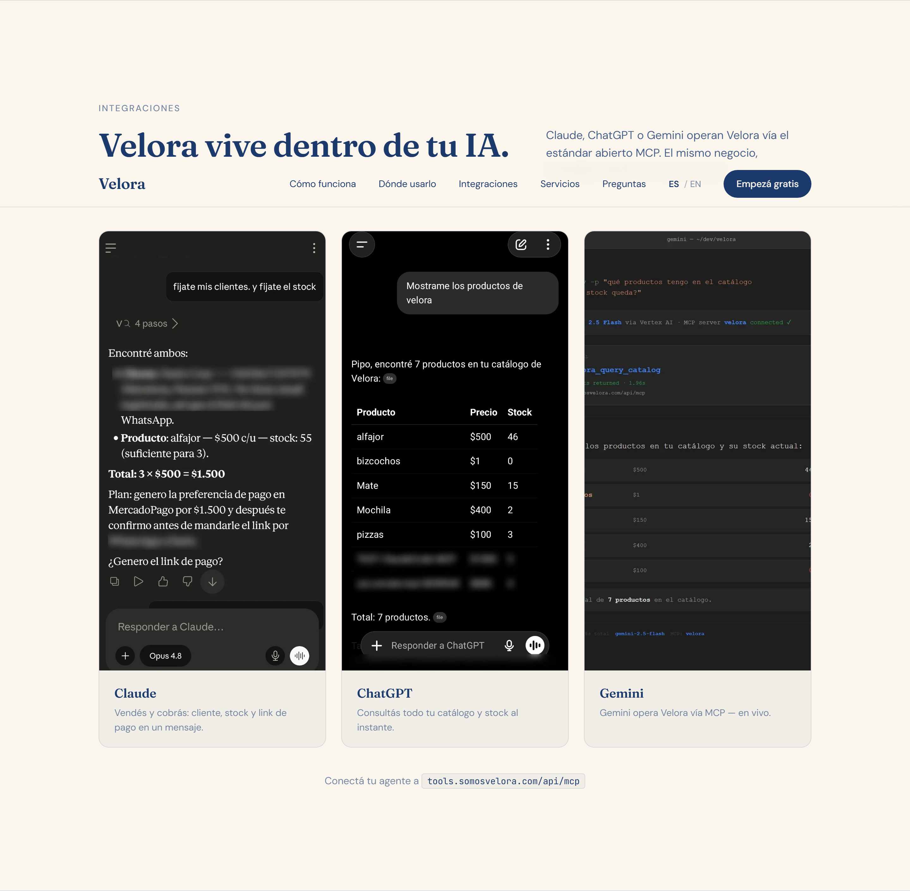
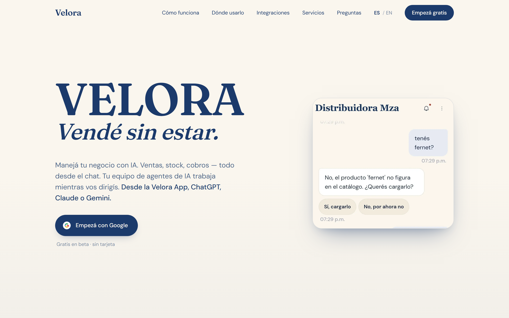
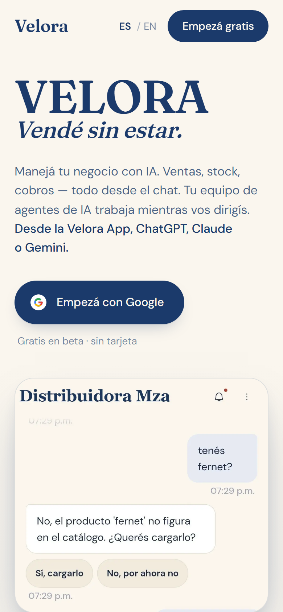

velora-mcp
ProductionThe Argentine commerce MCP server behind Velora: real AFIP/ARCA invoicing (live CAE), MercadoPago, logistics (sandbox), catalog and WhatsApp — 61 tools across 14 packs behind one HMAC-authenticated, multi-tenant endpoint.
Backend & AI engineer · TypeScript/Node · MCP, agents & document extraction in production
I run a production MCP platform listed on Glama — deployed on Cloud Run, spun up on demand: 61 tools Claude, ChatGPT and Gemini operate to run a real business, real payments and invoicing included. 3 pull requests merged into Mastra (26k★).
Available · Remote · US/EU friendly · USD
Case study · in production
A chat-first, multi-agent commerce platform for businesses in Argentina. It exposes a production MCP server with 61 tools covering the full commerce cycle — and any MCP client can operate a real business through it, with HMAC-authenticated, multi-tenant access. This is the actual product — deployed on Cloud Run, spun up on demand.



Fiscal invoicing (AFIP/ARCA), MercadoPago payments and payment links, logistics (sandbox), catalog, sales, cash register, and WhatsApp messaging via the Meta Cloud API.
A supervisor + specialized sub-agents communicating over the A2A protocol, with signed agent identities (Ed25519), orchestrated with Google ADK and Gemini.
Next.js / TypeScript on Cloud Run with Postgres. Idempotent money-path mutations, per-tenant isolation, webhook signature verification, async task queues.
Public, verifiable pieces of the same stack — real code and real endpoints you can check, not a slide.
The Argentine commerce MCP server behind Velora: real AFIP/ARCA invoicing (live CAE), MercadoPago, logistics (sandbox), catalog and WhatsApp — 61 tools across 14 packs behind one HMAC-authenticated, multi-tenant endpoint.
The pure, no-auth fiscal tools published as a standalone MCP server manifest — registered so any MCP-compatible client can discover and connect over Streamable HTTP.
A document-extraction engine in production for a client: PDFs go in, structured and validated JSON comes out, enforced by deterministic guardrails — a strict schema, shape validation on every response, and fail-closed behaviour when a document doesn't conform. Node.js/TypeScript and Express on Google Cloud Run, scale-to-zero.
I also built its evaluation harness, which scores model and prompt combinations on accuracy, cost and latency together across 40 hand-verified documents. Two findings it produced: cutting 55% of the prompt cost 0.3 points of accuracy (82.5% → 82.2%, same 736 fields), and the scorer itself was dropping fully-failed documents out of the sample instead of counting them as zero — a metric that only measures what the system produced cannot see what it omitted.
A security-focused Microsoft Teams agent over Outlook: mention @nanoclaw in a chat and it reads your mail and calendar, drafts emails, and creates events — with a fail-closed allow-list, a write-confirmation gate on every send, and an untrusted-data envelope around tool results. A Claude tool-use loop on the Microsoft 365 Agents SDK, using the olk Outlook CLI, with secrets in GCP Secret Manager on Cloud Run. Code is public.
The multi-agent orchestration layer: a Supervisor plus 8 A2A sub-agents (Ed25519-signed) on Google ADK, Vertex AI and Cloud Run — Velora's entry in Google's international AI agent competition.
The tools behind the work — from protocol design to deployment.
Formal training, background, and the proof-of-work behind the build.
University Technical Degree in Programming — Universidad Tecnológica Nacional (UTN), 2020–2022.
Sworn Certified Translator of English — Universidad del Aconcagua, Mendoza (2003–2008). English at a professional, near-native level.
Velora · 2024 — present. Designed, built, and operated a multi-agent commerce platform end to end: product, code, deploys, and incident response on Google Cloud.
Choreless — Backend Developer · 2025–2026 · Remote. Built and maintained REST APIs in TypeScript and Node.js, designed relational schemas and optimised SQL queries, and integrated MCP servers and AI agents into backend services.
Open BSP — Remote (US) · 2024–2025. Wrote and tested prompts for production AI agents.
Document-extraction engine (client project) · 2026 — present. Running in production, with an evaluation harness measuring accuracy, cost and latency together.
Velora was entered in Google's international AI agent competition (2026), built on Google ADK, the A2A protocol, Gemini, and Cloud Run.
Claude Code as a first-class workflow: specification, generation, rigorous review, and testing. It's how one developer shipped and operates a 61-tool production MCP platform. I direct; the AI executes.
Get in touch
If you're building MCP servers, AI agents, or production systems that move real money or real documents — and you want someone who has shipped and operates them, and who measures whether they actually work — I'd be glad to talk.